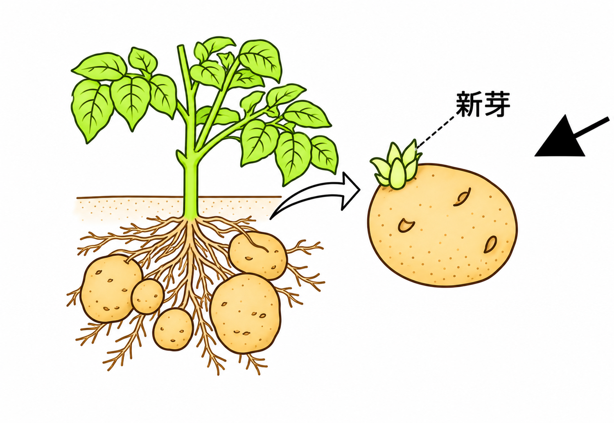
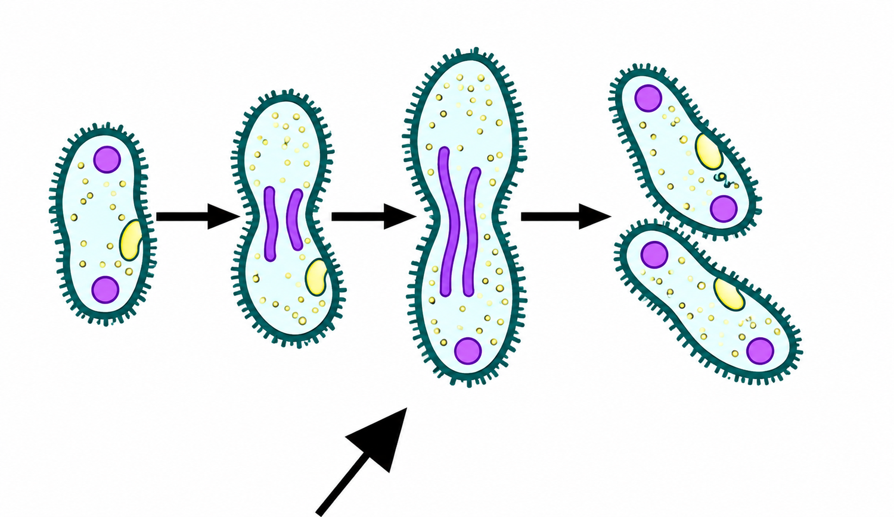
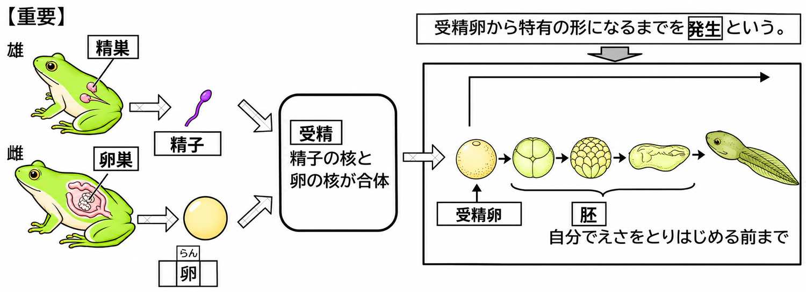
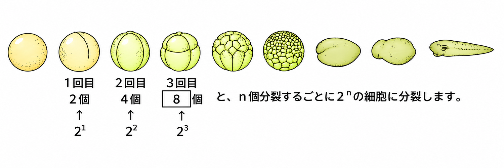
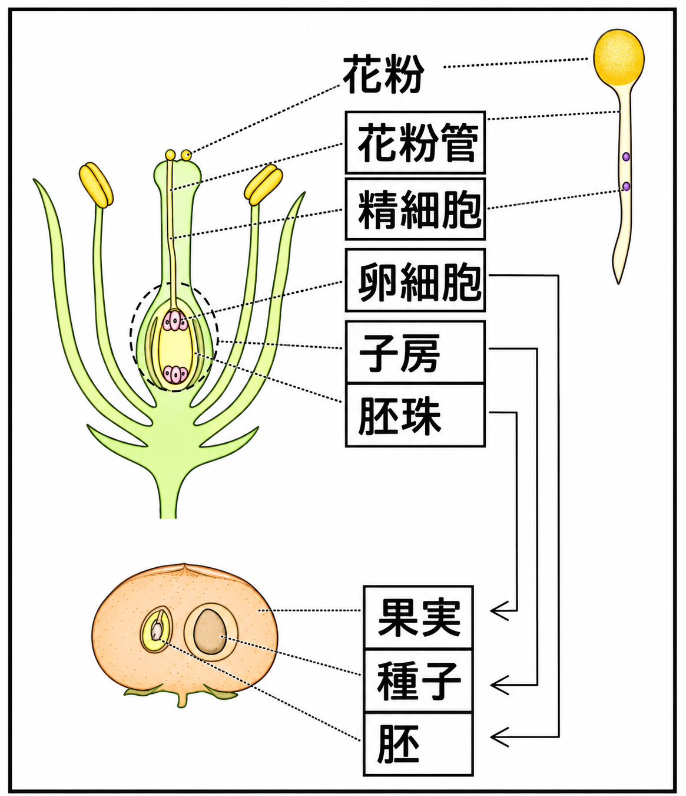

生物が成長して、自分と同じ子をつくることを生殖といいます。生殖には2つの種類があります。
メスとオスの関係ではなく、体細胞分裂によって仲間をふやす生殖を無性生殖といいます。メスとオスの関係により、それぞれの生殖細胞が受精して新しい子をつくる生殖を有性生殖といいます。
▶ 無性生殖（受精を行わずに子をつくる）
ジャガイモのように、イモから新しい個体が生まれるなど、からだの一部から新しい個体が生まれる無性生殖を栄養生殖といいます。

アメーバやゾウリムシのように、親のからだが二つに分かれてふえる無性生殖を分裂といいます。

- 生殖……生物が成長し、自分と同じ子をつくること
- 無性生殖……メスオスの関係なく、体細胞分裂でふやす（受精を行わない）
- 有性生殖……メスオスの関係で、生殖細胞が受精して子をつくる
- 無性生殖の例……栄養生殖（ジャガイモ）、分裂（アメーバ・ゾウリムシ）
🏆 ベストタイム
多くの動物には雌と雄があります。雌の卵巣では卵がつくられ、雄の精巣では精子がつくられます。この精子や卵などの細胞を生殖細胞といいます。
カエルの場合、雌は卵を水中に産み、雄は水中に精子を放出します。精子の1つが卵と結びつき、精子の核と卵の核が合体します。これを受精といいます。

受精した卵を受精卵といいます。受精卵は細胞分裂をくり返して胚になります。※胚は、受精卵から自分でえさをとりはじめる前までの個体をいいます。受精卵から生物特有の形に変化していく過程を発生といいます。

受精卵は、n回分裂すると2n個の細胞になります。たとえば3回目の分裂では 23＝8個です。
- 雌の卵巣で卵、雄の精巣で精子がつくられる（生殖細胞）
- 受精……精子の核と卵の核が合体すること。受精した卵＝受精卵
- 胚……受精卵が細胞分裂をくり返し、自分でえさをとりはじめる前までの個体
- 発生……受精卵が生物特有の形に変化していく過程
- n回分裂すると 2ⁿ個の細胞になる（3回目は8個）

🏆 ベストタイム
植物の有性生殖では、受粉から種子ができるまでを、順番に覚えます。

花粉がめしべの柱頭につくことを受粉といいます。花粉は花粉管をのばします。花粉管の中を、雄の生殖細胞の精細胞が移動します。
精細胞の核が、胚珠の中の生殖細胞の卵細胞の核と合体します。これが受精です。
受精卵は体細胞分裂をして胚になり、胚は植物のからだをつくります。胚珠は種子になり、子房は果実になります。
- 受粉→花粉管がのびる→精細胞が移動→受精（精細胞の核＋卵細胞の核）
- 受精卵は体細胞分裂をして胚になる（胚は植物のからだをつくる）
- 胚珠は種子に、子房は果実になる